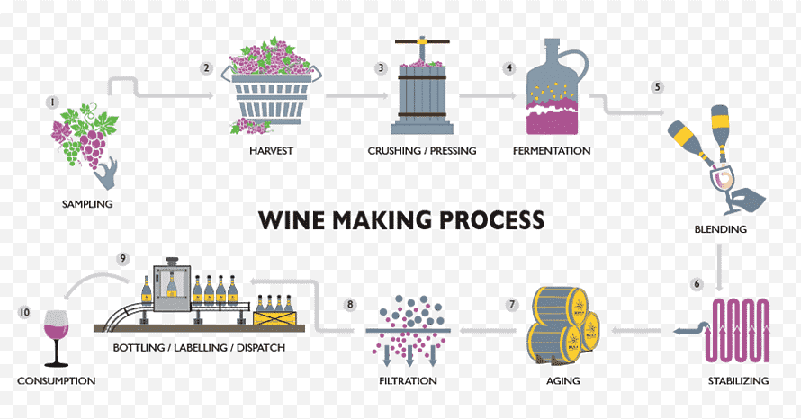
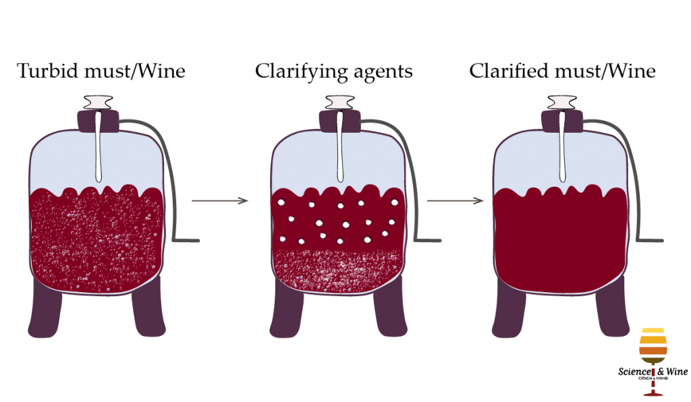
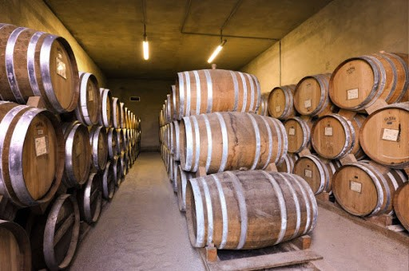

The process of wine making
Wine making process includes six basic steps:
1. Harvesting
2. Crushing and pressing
3. Juice separation
4. Fermentation
5. Clarification
6. Aging and bottling

Harvesting
Before harvesting, the clusters of wine grape are examined by the vineyardists with a refractometer whether the grapes are ready to be picked or not.
Refractometer determines the amount of sugar in grapes. Usually fresh and fully ripened grapes are preferred which is used as a raw material for wine making.
Matured and fully ripened grapes are high in sugar content but if the grape results in sugar deficiency, then extra sugar is added directly.
The grapes are then harvested at a precise time which is done mechanically or by hand. Grapes are collected in a box and later transferred to a large containers.
Then the collected grapes are sorted by removing rotten and unriped grapes and are dumped directly into a crusher.
Crushing and pressing
Crushing of the grapes are done in a mechnical crusher nowadays. Traditionally, it was stomped by a feet in the barrels but crushing and pressing in a mechanical crusher reduces the need for preservatives and improved the quality of wine.
Crushed or stomped grapes is called a must.
The process of making white wine and red wine is similar. However, in white wine, the must are crushed and pressed quickly to separate the skin and seeds.
The skin of the grapes contain tannins which is responsible for producing color that will not be able to leach out. While red wine is left with the skin to achieve a distinctive red color and flavour.
Juice Separation
The fruit juice is extracted from the widely used Willmes press which consists of a perforated cylinder with an inflatable tube, pressing the grapes against the rotating cylinder.
Extracted juice is turbid and needs settling to allow separation. Sulfur dioxide is often used to prevent the fermentation. Bentonite is also added to reduce nitrogen content and for clarification of juice.
Botrytis cinera causes browning of the juice with its high amount of polyphenol oxidase enzyme in skin, so pasteurization is done to inactivate these undesirable enzymatic reaction.
Fermentation
Fermentation begins naturally within 6-12 hours when the must are kept in the fermentation tank. The time duration the skin of the grape are kept in tank determines the type of wine i.e, longer the grape skin is placed, darker will be the color of the wine.
During fermentation, the wine yeast Saccharomyces cerevisiae converts sugar into alcohol upto 18% in favourable condition. Alcohol content can be increased by the addition of sugar cane which is termed as chaptalization.
Optimum temperature about 25°C must be maintained during alcoholic fermentation to facilitate the growth of yeast and to extract the desirable flavour and color.
Fermentation usually completes in about 20-30 days of a normal must.
Clarification

The clarification process begins once the fermentation process is completed. Some suspended materials like yeast cells, skin particles, wooden barrel suspended material makes the wine turbid and needs clarification.
Clarification can be done by fining, filtration, centrifugation, refrigeration and heating.
Fining occurs when a fining agents like bentonite, egg white, nylon and gelatin are added to clarify the wine. It clarifies on the basis of adsorption, chemical and precipitation reaction.
Filtration is done using a filter pads made of cellulose fibers. The pore size of the filter drains the large solid materials when juice is poured.
Centrifugation is applied to the wines that are difficult to clarify. Lower temperature prevents the yeast growth and evolution of CO2 and keeps the cell suspended and also rapids the precipitation process.
Pasteurization is done at 70-82°C to remove the cloudiness formed by the protein.
Aging & Bottling

Final step of the process is aging then bottling. Aging is done in a wooden container allowing oxygen to enter and alcohol and moisture to escape. When the water and alcohol are released, volumn decreases.
Acidity also decreases with the aging period forming complex compound that affects the flavour and aroma.
Further aging can be done in bottles or stainless steel tanks but before bottling blending and filtration is required.
Blending improves the quality of the wine wheras filteration is done by the addition of sulfur dioxide and heating to remove undesirable microorganisms.
During bottling, sterilized bottles are used where color and shapes are customized according to the type of wines. White wine is bottled in brown or green coloured bottle as it may change when exposed to light.
During the operation, oxygen and carbondioxide must be maintained. Bottomfilling should be done i.e, filling from the bottom.
After bottling, corks are preferred for wines for closure. Then the label is applied and bottles are packed for shipment.
Appropriate storage condition must be maintained i.e, it should be stored at 12-16°C in a dry and cool place.